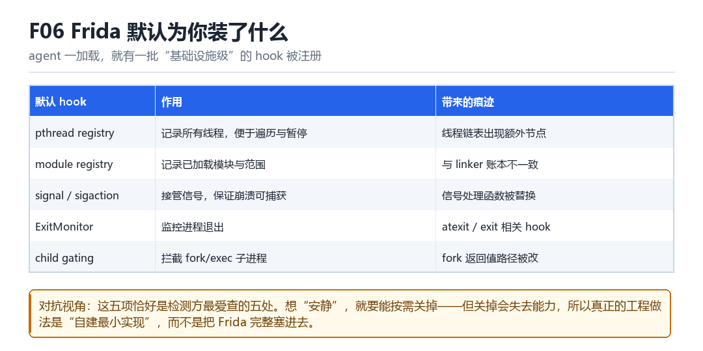

Frida 默认 Hook
pthread registry、module registry、signal/sigaction、ExitMonitor、child gating
agent 一加载，就有一批“基础设施级”的 hook 被注册——它们既是能力，也是痕迹。
6.1 五项默认设施

| 设施 | 作用 | 痕迹 |
|---|---|---|
| pthread registry | 记录所有线程 | 线程链表多出节点 |
| module registry | 记录已加载模块 | 与 linker 账本不一致 |
| signal / sigaction | 接管信号，保证崩溃可捕获 | 信号处理函数被替换 |
| ExitMonitor | 监控进程退出 | atexit 相关 hook |
| child gating | 拦截 fork/exec | fork 返回路径被改 |
6.2 为什么这五项恰好是检测重点
因为它们是“无论你写什么脚本都会发生”的副作用。检测方不需要知道你在 hook 什么，只要发现这五处之一异常，就足以怀疑。
6.3 两条路：关掉，或自建
- 关掉：牺牲能力换安静。比如不做 child gating，就不拦子进程。
- 自建最小实现：只实现你需要的那一小部分，不加载整套 Gum。这是工程上更彻底的方案（F09）。
6.4 本章自测
- 五项默认设施分别解决什么问题？
- 为什么说它们“无论写什么脚本都会发生”？
- 如果只需要 hook 一个函数，最小实现应该包含什么？
- child gating 关掉后会失去什么能力？
6.5 深入：module registry 与 linker 账本的差异
Frida 自己维护一份“已加载模块”的列表，用来支持 Module.findBaseAddress 之类的 API。这份列表来自 linker 的遍历，但它是快照——如果之后有新的 so 加载，两份账本就会不一致。
| 情况 | module registry | linker solist |
|---|---|---|
| 正常加载 | 有 | 有 |
| 自行 mmap 加载 | 无 | 无 |
| 运行时 dlopen | 可能滞后 | 有 |
6.6 实战：怎么判断“某个 so 是不是被 Frida 记录过”
// Frida 侧
Process.enumerateModules().map(m => m.path)
// 系统侧
// 遍历 /proc/self/maps 里所有 .so 路径，去重6.7 原理推演：为什么“默认 hook”是设计选择而非疏忽
Frida 的目标是“让脚本作者不用关心底层”。要做到这一点，它必须接管信号（否则崩溃就丢了）、记录线程（否则 pause/resume 做不到）、记录模块（否则 findModule 做不到）。这些能力都有代价，但去掉它们，可用性会大幅下降。
| 能力 | 依赖的 hook | 去掉后的后果 |
|---|---|---|
| 崩溃捕获 | sigaction | 看不到崩溃 |
| 线程控制 | pthread registry | 无法暂停/恢复 |
| 模块查询 | module registry | API 失效 |
所以“低痕迹”方案的本质，是“自己实现一个更小的子集”，而不是“让 Frida 变安静”。
6.8 数据细节：最小实现需要多少代码
| 功能 | 最小实现规模 | 说明 |
|---|---|---|
| 单点 inline hook | 约 100 行 | 含跳转与蹦床 |
| Java 方法 hook | 约 500 行 | 含 ArtMethod 处理 |
| 自定义加载 so | 约 800 行 | 含重定位 |
| 完整替代 Frida | 数万行 | 不现实 |
结论：不要试图替代 Frida，而是“裁剪出你真正需要的那一小块”。
6.9 深入：signal 接管为什么必须“链式”
因为 App 自己可能也注册了信号处理（比如崩溃收集 SDK）。如果你直接替换，就把它的逻辑吃掉了——表现为“崩溃收集失效”或“某些功能异常”。
| 做法 | App 感知 | 风险 |
|---|---|---|
| 直接替换 | 能感知 | 吃掉业务逻辑 |
| 链式调用 | 无感 | 需保存原 handler |
所以正确做法是：保存原 handler，在你的处理函数里先做自己的事，再调用原来的。
6.10 深入：ExitMonitor 的实现方式
它通常 hook exit / _exit / abort / pthread_exit 等函数，以及 atexit 注册链。目的是“在进程死之前，把消息发出去”。
// 如果进程被 SIGKILL，任何 hook 都来不及跑
// 所以 ExitMonitor 只能覆盖“正常退出”与“可捕获的异常”6.11 实战：判断“默认 hook 是否被触发过”
# 1. 线程链表里是否多了节点
ls /proc/self/task | wc -l
# 2. 信号处理是否被换（需要读内存，门槛较高）
# 3. 模块列表是否与 maps 一致现场：空脚本留下的脚印
你写了一个只有一行 console.log('empty') 的脚本，什么 hook 都没挂，打算先确认通道通不通。注入前后一对比却愣住了：/proc/self/task 平白多了三条线程，maps 里多了两段匿名可执行页，cat /proc/self/status | grep TracerPid 在注入瞬间非 0，连 SIGSEGV 的处理函数指针都不再指向 libc 的默认实现了。
这些都不是你的脚本干的。agent 一落地，Gum 就先给自己铺好整套基础设施：记线程、记模块、接管信号、盯退出、守子进程。对检测方来说这是天大的便宜——它完全不需要知道你 hook 了什么，只要发现“多出来了”，就够立案。换句话说，真正决定痕迹的是“加载了什么运行时”，不是“运行了什么代码”。
把空脚本的启动拆成七拍
- agent 初始化 → 对 pthread_create / pthread_setname_np → 拦下所有线程创建 → 结果：Gum 的 pthread registry 为每个线程建节点，
/proc/self/task同时多出 JS 线程与 pool 线程。 - agent → 对 linker 的 dlopen / android_dlopen_ext 与 solist → 登记模块 → 结果：module registry 与系统 linker 账本变成两份可以互相核对的清单，差一项就是线索。
- agent → 对 sigaction → 接管 SIGSEGV / SIGABRT / SIGBUS 等 → 结果：崩溃能被转成 JS 异常或规整的 tombstone，但 signal handler 的地址不再属于 libc。
- agent → 对 atexit / exit / _exit → 装 ExitMonitor → 结果：进程退出时有机会卸载 agent 并 flush 未发完的消息，代价是退出路径被多包了一层。
- host 若启用 child gating → 对 fork / vfork / execve / posix_spawn → 装钩子 → 结果：子进程一出生就被暂停等待注入，fork 的返回路径被改写，时序上多出一段可测的停顿。
- agent → 对 GLib 主循环与线程池 → 建 gmain 上下文 → 结果：多出固定命名的线程，以及若干 pipe / socket FD，名字和数量都相当稳定。
- 你的空脚本 → 对 JS 线程 → 只执行一句 console.log → 结果：前六拍一个不少地全部发生完，脚印早已铺好；写三百行复杂 hook 与写这一行，痕迹完全一样。
复现：空脚本的差分实验
做一次“注入前 / 注入后”的差分，比读十页源码都直观。关键是两次采样必须对准同一个 PID、并且在 App 处于同一状态下采；否则你会得到一份空 diff，然后错误地得出“没有痕迹”的结论。
# 1) 未注入基线（先确认 PID 稳定）
frida-ps -U
adb shell 'cat /proc/$(pidof com.example.app)/task/*/comm' | sort > base.txt
adb shell 'cat /proc/$(pidof com.example.app)/maps' | grep 'r-xp' | grep -v '/' | wc -l
# 2) empty.js 内容只有一行：console.log('empty')
frida -U -f com.example.app -l empty.js
# 3) 注入后再采一次，对比
adb shell 'cat /proc/$(pidof com.example.app)/task/*/comm' | sort > after.txt
diff base.txt after.txt
adb shell 'cat /proc/$(pidof com.example.app)/maps' | grep 'r-xp' | grep -v '/' | wc -l算成功（即确认默认设施真的存在）：diff 里多出 gum-js-loop、pool-frida、gmain 之类的行；匿名可执行页数从基线的 3 段涨到 5～6 段；注入瞬间 TracerPid 非 0。算失败（实验本身没做对）：两次采样差分为空——多半是第二次采样时 App 已退出，或 pidof 取到了另一个进程；先用 frida-ps -U 锁定 PID，再在 REPL 保持会话期间采样。还有一种“假成功”：把 %resume 之前和之后混着采，线程数会差得离谱，那测的是启动阶段，不是默认 hook。
| 默认设施 | 注册动作 | 留下的痕迹 | 关掉之后失去什么 |
|---|---|---|---|
| pthread registry | hook pthread_create | 线程数 +3、名字成串 | 无法 pause / resume 线程 |
| module registry | hook dlopen / 读 solist | 两份账本可对账 | Process.findModuleByName 失效 |
| sigaction 接管 | 替换信号 handler | handler 地址不在 libc | 崩溃直接死，无 JS 异常 |
| ExitMonitor | hook exit / atexit | 退出路径多一层 | 断连时消息整批丢失 |
| child gating | hook fork / execve | 子进程短暂停顿 | 子进程完全脱管 |
把“能力即痕迹”这张表带过去：KPM 部 M02 内核观察面与基础检测处理 会把线程数、maps 匿名段、FD 高水位全部列成只读观测面，逐项给出异常表现；LSPosed 部 L09 侧信道与结构差分检测 更进一步，直接把结论写成“不看有没有特征，看结构是否合理”——那正是本章这笔固定开销无处可藏的根本原因。